If some charge of a neutral particle is displaced, the system is
now consists of a pair of equal and opposite charges with the charges having some
separation. Such system is called electric dipole.
In other words, an electric dipole is defined as a pair of equal and opposite
charges separated by a fixed distance. This is shown in diagram below:
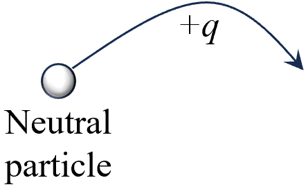
Diagram: removal of charge \(q\)
from a neutral particle.
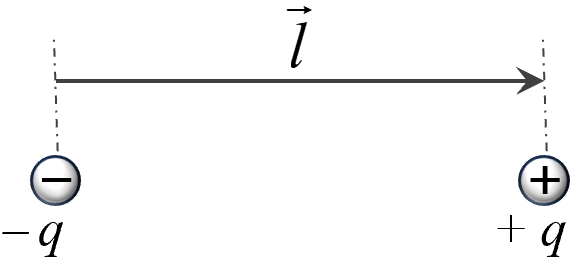
Diagram: An electric dipole.
We study about such electric dipoles because they can
interact with external electric fields and also generate their own electric fields.
In this section, we will systematically study the effects experienced by and
produced by electric dipoles.
The strength of an electric dipole is measured by its dipole moment. For an electric
dipole consisting of two equal and opposite charges \( +q \) and \( -q \), separated
by a displacement \( \vec{l} \), the dipole moment \( \vec{p} \) is defined as:
\(\qquad\vec{p} = q \vec{l}\)
The displacement \( \vec{l} \) is measured from the negative charge to the positive
charge. The dipole moment of an electric dipole is a vector quantity and has an SI
unit of Coulomb meter \(\left(\text{Cm}\right)\).
A more general definition of the dipole moment \( \vec{p} \) for any system of
charges, where the charges are \( q_1, q_2, q_3, \dots, q_n \) located at position
vectors \( \vec{r}_1, \vec{r}_2, \vec{r}_3, \dots, \vec{r}_n \) as shown:
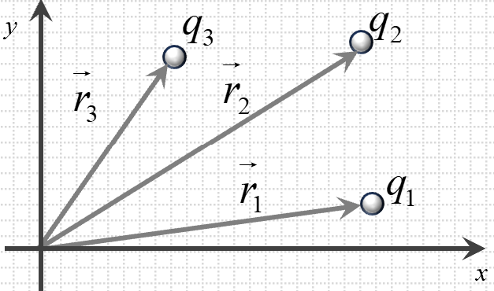
Diagram: Dipole moment of any set
of charges.
Calculation of total dipole moment of the system is done by:
Here, \( \vec{r}_1 - \vec{r}_2 \) represents the position vector \( \vec{l} \),
which points from the negative charge to the positive charge, as mentioned earlier.
So again we get,
\(\qquad\vec{p} = q \vec{l}\)
Following are a few examples which illustrate various methods of calculating
the electric dipole moment of a system of charges.
Pair of equal and opposite charges
We discussed for an electric
dipole consisting of two equal and opposite charges \( +q \) and \(
-q \), separated
by a displacement \( \vec{l} \), the dipole moment \( \vec{p} \) is
defined as:
\(\qquad\vec{p} = q \vec{l}\)
In practice, if positions of the two charges and their
magnitudes are known, the calculation is straightforward. For
instance, if \(
q = 5\,\text{C} \) and \(\vec{l} = 2\,\hat{i} +
3\,\hat{j}\,\text{m}\), then:
In many situations, you may encounter multiple dipoles or a
collection of charges that can be grouped into pairs of equal and
opposite charges. Each pair contributes its own dipole moment, and
the net dipole moment of the entire system is the vector sum of the
dipole moments of all these individual pairs.
Suppose you have several pairs of charges: \( (+q_1, -q_1)\),
\((+q_2,
-q_2)\), \((+q_3, -q_3), \ldots \) as shown in diagram below:
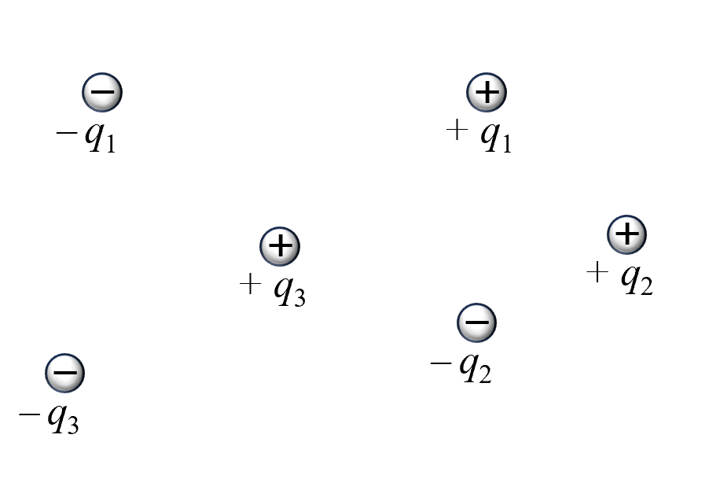
Diagram: A
set of dipoles.
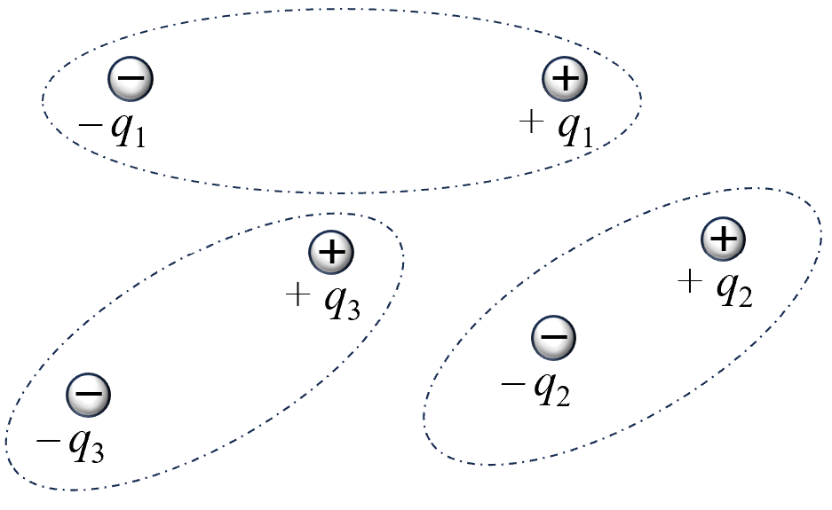
Diagram:
Pairing
in a set of dipoles.
Each pair \( i \) has its own
dipole
moment \( \vec{p_i} \). The total dipole moment of the system is
given by:
Thus, using the direct summation method, the net dipole moment is:
\(\qquad \vec{p} = -2qa\hat{j}\)
Alternately,
Notice that the total charge is zero (\(q + q - 2q = 0\)), so we can
think of the \(-2q\) charge as composed of two \(-q\) charges at the
same point \((0,a)\). This is shown below:
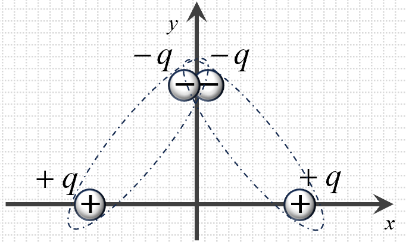
Diagram:
Charges
forming two dipoles.
This allows us to form two dipoles:
Dipole 1: \( +q \) at \((-a,0)\) and \(-q\) at \((0,a)\)
This matches the result we obtained using the first method. Thus,
whether by direct summation or by considering the system as two
dipoles, we find the same result.
Continuous distribution of charge
In situations where charge is not localized at specific points but
is distributed continuously over a region, the dipole moment is
calculated using an integral. This extends the general definition of
dipole moment from a discrete sum to a continuous distribution:
Here, \(\vec{r}\) represents the position vector of an infinitesimal
charge element \(dq\). To account for both positive and negative
charges separately, the integral can be split as follows:
We can define a "center of positive charge" at the position vector
\(\vec{r}_{(+)}\), which represents the location where the entire
positive charge \(+Q\) could be considered concentrated to produce
the same dipole moment. This is given by:
For the calculation of the dipole moment of a charge distribution,
the positive charge distribution can be treated as being
concentrated at its "center of charge," which is conceptually
similar to the center of mass for a similar mass distribution.
To further clarify this concept, study the following two examples
Positive charge distribution on rod
Consider a system where a negative
charge \(-q\) is placed at the
origin \((0,0)\), and a positive charge \(+q\) is
continuously
distributed along a rod extending from \((x_0,0)\) to
\((x_0+L,0)\) as shown:
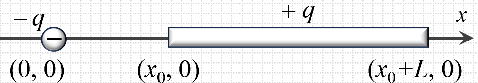
Diagram:
Positive charge of dipole on a rod.
The linear charge density (uniform) of the rod is
\(\lambda = \dfrac{q}{L}\).
The position of an infinitesimal element of charge \(dq
=
\lambda\,dx\) on the rod is \(\vec{r} = x\hat{i}\),
where \(x\)
ranges from \(x_0\) to \(x_0+L\).
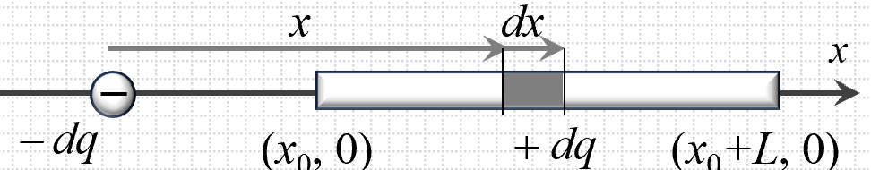
Diagram:
Considered element \(dq\) on the rod.
The dipole moment due
to this
positive charge distribution is:
Hence, the positive charge distribution's dipole moment
is the same
as if all the \(+q\) were concentrated at \((x_0 +
\dfrac{L}{2},
0)\). Thus, instead of performing the integral every
time, one could
directly place the entire positive charge \(+q\) at its
"center of
charge" \((x_0 + L/2,0)\) and compute the dipole moment
relative to
the negative charge at the origin, yielding \(\vec{p} =
q(x_0 +
L/2)\hat{i}\).
Positive charge distribution on semicircle
Consider a semicircular arc of radius \(R\) lying, say,
in the upper
half of the \(x\)-\(y\) plane. Let a total positive
charge \(+q\) be
uniformly distributed along this semicircle, and let a
negative
charge \(-q\) be located at the center of the semicircle
(its center
of curvature). This is shown below:
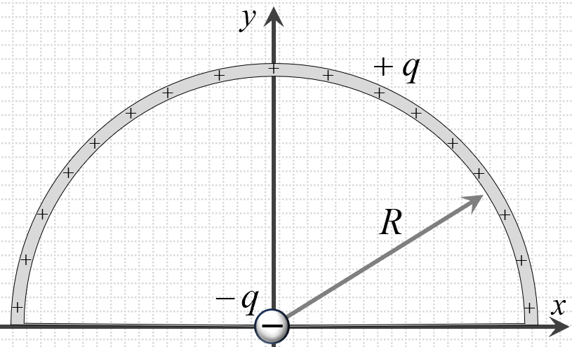
Diagram:
Positive charge of dipole on a semicircle.
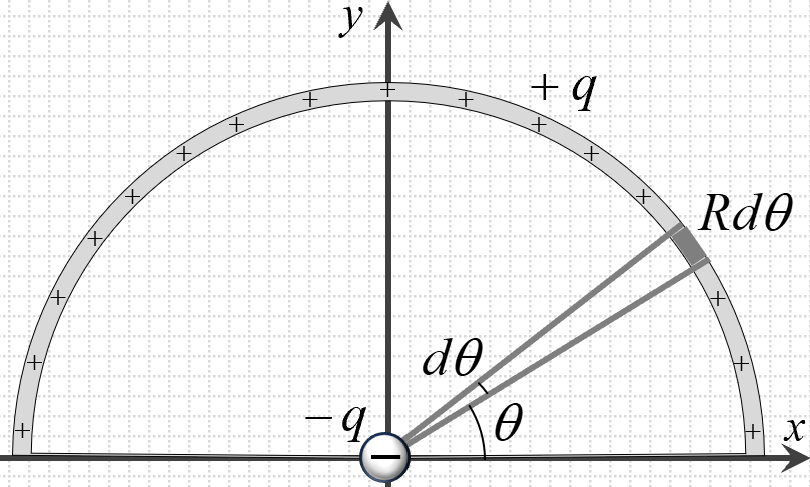
Diagram:
Considered element \(dq\) on the semiring.
Parametrically, the semicircle can be described as
\(\vec{r}(\theta)
= R\cos\theta\,\hat{i} + R\sin\theta\,\hat{j}\), with
\(\theta\)
running from \(0\) to \(\pi\). The linear charge density
for the
semicircle is \(\lambda = \dfrac{q}{\pi R}\). For a
small
element of
length \(d\ell = R\,d\theta\), the infinitesimal charge
is \(dq =
\lambda R\,d\theta = \dfrac{q}{\pi}d\theta\).
The dipole moment due to the positive charge
distribution is:
Thus, the positive charge on the semicircle creates a
dipole moment
\(\vec{p}_{+} = \dfrac{2qR}{\pi}\hat{j}\). With the
negative charge
\(-q\) at the origin, the net dipole moment \(\vec{p}\)
is just
\(\vec{p}_{+}\) (since the negative charge at the center
contributes
no additional moment about that point).
Using the "center of charge" approach, the uniform
semicircular
distribution of positive charge can be thought of as
concentrated at
its charge centroid. For a uniformly charged semicircle,
the
centroid along the vertical direction is known to be at
\((0,\dfrac{2R}{\pi})\). Hence, placing a charge \(+q\)
at
\((0,\dfrac{2R}{\pi})\) and a charge \(-q\) at the
origin
\((0,0)\),
the dipole moment is simply:
This matches the integral result, confirming that using
the concept
of "center of charge" greatly simplifies the process of
finding the
dipole moment for continuous distributions.
In this section, we consider an electric dipole placed in an external electric
field and examine the effects experienced by the dipole. Specifically, we will
discuss the force on the dipole and the torque acting on it due to the presence
of the electric field.
Force on Dipole
In Uniform Electric Field
Consider an electric dipole placed in a uniform electric
field. The dipole consists of two charges of equal magnitude
but opposite sign, separated by a small distance. In a uniform
field, each charge experiences a force equal in magnitude
but opposite in direction to the force on the other charge. As a
result, the dipole as a whole does not move forward or backward
in a uniform field.
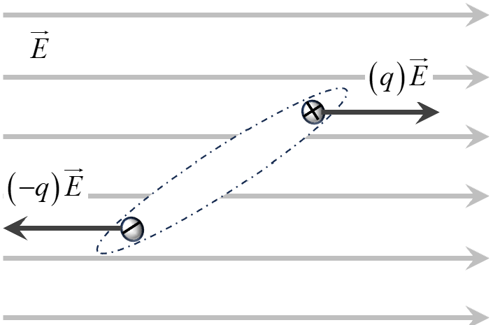
Diagram:
Dipole placed in a uniform electric field.
Thus, in a uniform electric field, there is no net
(translational)
force acting on the dipole. However, the dipole can still
experience a torque that may rotate it, aligning its dipole
moment with the direction of the electric field.
Non-Uniform Electric Field
Now, consider what happens if the electric field is not uniform.
Suppose we have a dipole aligned along the \(x\)-axis, with a
positive charge \(+q\) at position \(x + \Delta x\) and a
negative
charge \(-q\) at position \(x\). The dipole moment is:
\(\qquad p = q\,\Delta x \)
In a non-uniform field, the electric field strength differs from
point to point. Let \(E(x)\) be the electric field at position
\(x\). Then the forces on the two charges are:
On the positive charge at \(x + \Delta x\): \(F_{+} = qE(x +
\Delta x)\)
On the negative charge at \(x\): \(F_{-} = -qE(x)\)
This is shown in diagram below:
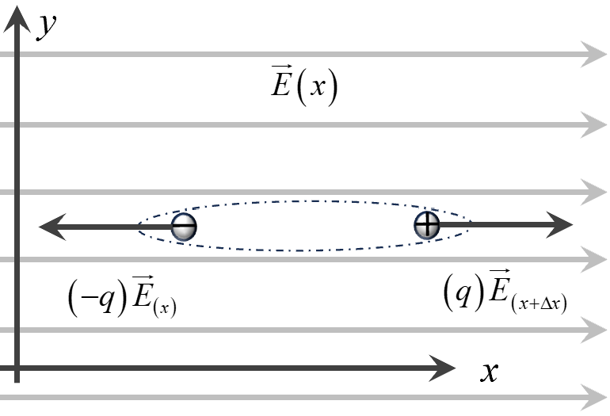
Diagram:
Dipole placed in a non uniform electric field.
The net force on the dipole is:
\(\qquad F = qE(x + \Delta x) - qE(x)\)
This shows how the force changes if the field changes between
\(x\) and \(x + \Delta x\). The term \(\dfrac{E(x + \Delta
x)-E(x)}{\Delta x}\)
represents how quickly \(E\) varies with \(x\). As \(\Delta x\)
(the separation of the dipole) becomes very small, this ratio
approaches the derivative of \(E\) with respect to \(x\).
Thus:
\(\qquad F = q\Delta x \dfrac{E(x + \Delta x)-E(x)}{\Delta x}\)
Taking the limit as \(\Delta x \to 0\):
\(\qquad F = p \dfrac{dE}{dx}\)
This indicates that if the electric field changes along the
\(x\)-direction, the dipole experiences a net force. If \(E\) is
uniform (\(\dfrac{dE}{dx}=0\)), there is no net force on the
dipole.
In other words, a dipole in a non-uniform electric field
experiences a force that depends on how quickly the field
changes in space and on the strength of the dipole moment.
General Case:
In the most general scenario, where the dipole moment
\( \vec{p} \) and the electric field \( \vec{E} \) are both
vectors,
the net force on the dipole in a non-uniform electric field
depends on the variations of all components of \(\vec{E}\) in
all three spatial directions.
Here, \( p_x \), \( p_y \), and \( p_z \) are the components of
\(\vec{p}\) along the \( x \)-, \( y \)-, and \( z \)-axes,
respectively.
The partial derivatives \(\dfrac{\partial E_x}{\partial x}\),
\(\dfrac{\partial E_y}{\partial y}\), and \(\dfrac{\partial
E_z}{\partial z}\)
show how each component of the electric field changes in its
respective direction.
This final vector form reveals that the dipole experiences a
force where the electric field varies in space. The direction
and
magnitude of this force depend on both the orientation of the
dipole moment and the manner in which the electric field’s
magnitude and direction change.
Torque on Dipole
Consider the torque acting on a dipole in a
uniform electric field \(\vec{E}\). The negative charge
\(-q\) at position \(\vec{r}\) feels a force
\(-q\vec{E}\),
and the positive charge \(+q\) at
\((\vec{r}+\Delta\vec{r})\) feels a force \(+q\vec{E}\). Refer the diagram below:
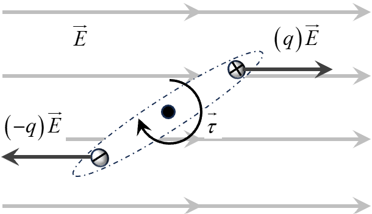
Diagram:
Rotational effect of forces on a dipole.
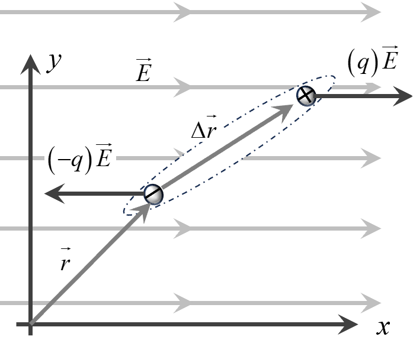
Diagram:
Forces generating torque on a dipole.
Although these two forces are equal and opposite, if
\(\Delta\vec{r}\) is not parallel to \(\vec{E}\), their
lines
of action do not coincide, creating a couple that can
rotate the dipole.
The torque \(\vec{\tau}\) about the chosen origin is:
This result shows that the torque acting on a dipole in
a
uniform electric field depends solely on the dipole
moment
and the field. It tries to rotate the dipole so that
\(\vec{p}\) aligns with \(\vec{E}\).
Also, importantly, the net torque on the dipole is the
same
regardless of the point about which we choose to
calculate
it. This indicates that the torque is a property of the
dipole itself, independent of the specific origin
chosen.
Consider an electric dipole placed in a uniform electric field \(\vec{E}\).
As we have seen, the dipole experiences no net translational force in a uniform
field,
but it can experience a torque that tends to align its dipole moment \(\vec{p}\)
with \(\vec{E}\).
The potential energy of the dipole in the electric field is defined in terms of the
work
done against the electric field’s torque to change the dipole’s orientation. We
choose
the configuration where the dipole is oriented at \(90^\circ\) to the field as our
reference
point of zero potential energy. This choice is a matter of convenience and does not
affect
the physics, only the zero point of energy.
Suppose the dipole initially makes an angle \(\theta_1\) with the electric field
\(\vec{E}\).
We now rotate it slowly to another angle \(\theta_2\), ensuring that it moves
quasi-statically
(without gaining kinetic energy). To do this, an external agent must apply a torque
equal
and opposite to the field’s torque.
The torque due to the field is \(\tau = pE \sin\theta\). If the dipole is rotated by
a small
angle \(d\theta\), the small amount of work done by the external agent is:
\( \qquad dW = pE \sin\theta \, d\theta \)
Integrating from \(\theta_1\) to \(\theta_2\):
\( \qquad W = \int_{\theta_1}^{\theta_2} pE \sin\theta \, d\theta = pE(\cos\theta_1
-
\cos\theta_2) \)
If we take \(\theta=90^\circ\) as our zero potential energy configuration, then at
\(\theta=90^\circ\),
\(\cos(90^\circ)=0\). Measuring potential energy relative to this orientation, the
potential
energy at a general angle \(\theta\) is:
Using the dot product \(\vec{p}\cdot\vec{E} = pE\cos\theta\), we can write:
\( \qquad U = -\vec{p}\cdot\vec{E} \)
We can arrive at the same expression by considering the electric potential at the
positions
of the two charges comprising the dipole. Suppose the dipole consists of a positive
charge
\(+q\) and a negative charge \(-q\) separated by a distance \(2a\). The total
potential energy
of the dipole in the external field is the sum of the energies of each charge in the
field’s
potential.
When the dipole is oriented at \(90^\circ\) to the field, the positive and negative
charges lie
on the same equipotential surface, making the net potential energy zero. As you
rotate the
dipole away from \(90^\circ\), one charge moves to a region of higher potential and
the other
to a region of lower potential, resulting in a net potential energy that matches the
earlier
derived expression \(-pE\cos\theta\).
The dipole is considered a rigid object: the distance between the charges does not
change.
Therefore, the internal electrostatic energy due to the interaction between the +q
and -q
charges remains constant. We do not consider this internal energy when discussing
the
potential energy in the external field, as it does not vary during the rotation
process.
Consider an electric dipole consisting of two charges: \(-q\) placed at a point
\(A\)
and \(+q\) placed at a point \(B\), separated by a small distance \(d\). Let the
midpoint
of the line segment \(AB\) be \(O\), so that \(AO = BO = \dfrac{d}{2}\). The dipole
moment is
defined as \(\vec{p} = q\,\vec{d}\), where \(\vec{d}\) is the vector from the
negative to the
positive charge.
We want to find the electric potential at a point \(P\) located at a distance \(r\)
from \(O\),
making an angle \(\theta\) with the dipole axis (the line along \(\vec{p}\)). We
assume that
\(r \gg d\), meaning the point \(P\) is far away compared to the dipole separation.
The electric potential at a point due to a point charge \(q\) at a distance \(R\)
is:
Because \(r \gg d\), we can simplify this expression. The difference in denominators
leads to a factor
involving \(\cos\theta\) and \(d\). After simplification, the dominant term emerges
as:
\(V \approx \dfrac{1}{4\pi\varepsilon_0} \dfrac{q d \cos\theta}{r^2}.\)
Recognizing that \(p = q d\), we get the final expression for the potential of a
dipole at a far point \(P\):
This result shows that the potential due to a dipole decreases faster with distance
(\(1/r^2\)) than that of a single charge (\(1/r\)).
The factor \(\cos\theta\) indicates that the potential depends on the orientation of
the dipole relative to the observation point.
Along the axis of the dipole (\(\theta = 0^\circ\)), the potential is maximum, and
at the equatorial line (\(\theta = 90^\circ\)), the potential is zero.
We have already found the electrostatic potential due to an electric
dipole at a point \(P\) located at a distance \(r\) from the dipole’s
center \(O\), making an angle \(\theta\) with the dipole axis:
where \(p = qd\) is the dipole moment. To find the electric field
\(\vec{E}\) at \(P\), we use the relation:
\(\vec{E} = -\nabla V\).
Since we are dealing with spherical coordinates (with \(r\) and \(\theta\)
defining the position of \(P\)), the electric field can be decomposed into
two perpendicular components: one along the radial direction (away from
or toward the dipole) and the other along a direction perpendicular to
this radius vector (the transverse direction, related to changes in
angle \(\theta\)).
Radial Component of \(\vec{E}\)
Consider first a small displacement \(dr\) along the line from \(O\) to
\(P\).
In this scenario, \(\theta\) stays constant while \(r\) changes from \(r\)
to
\(r + dr\). The radial component of the electric field is obtained by
differentiating \(V\) with respect to \(r\), treating \(\theta\) as
constant:
Now consider a small angular displacement \(d\theta\) at nearly constant
\(r\).
In this case, we find the transverse component of the electric field by
differentiating \(V\) with respect to \(\theta\):
\( \qquad E = \dfrac{1}{4\pi\varepsilon_0}\dfrac{p}{r^3}\sqrt{3\cos^2\theta + 1}. \)
The direction of the resultant field depends on \(\theta\) and can be
described
in terms of an angle \(\alpha\) it makes with the radial direction. One
finds that
\(\alpha = \tan^{-1}\left(\dfrac{1}{2}\tan\theta\right)\), indicating the
field’s orientation
changes with the position around the dipole.
Special Cases
\(\theta = 0^\circ\) (On the Dipole Axis): Here, the potential
is maximum and the field
simplifies to \( E = \dfrac{1}{4\pi\varepsilon_0} \dfrac{2p}{r^3} \),
directed along the axis.
This position is often called the “end-on” position.
\(\theta = 90^\circ\) (On the Equatorial Line): The potential
here is zero, but the field
is \( E = \dfrac{1}{4\pi\varepsilon_0} \dfrac{p}{r^3} \), directed
perpendicular to the axis.
This is known as the “broadside-on” position.
In all cases, the dipole field falls off rapidly with distance (\(1/r^3\)),
making it much weaker
at large distances compared to the field of a single point charge
(\(1/r^2\)).